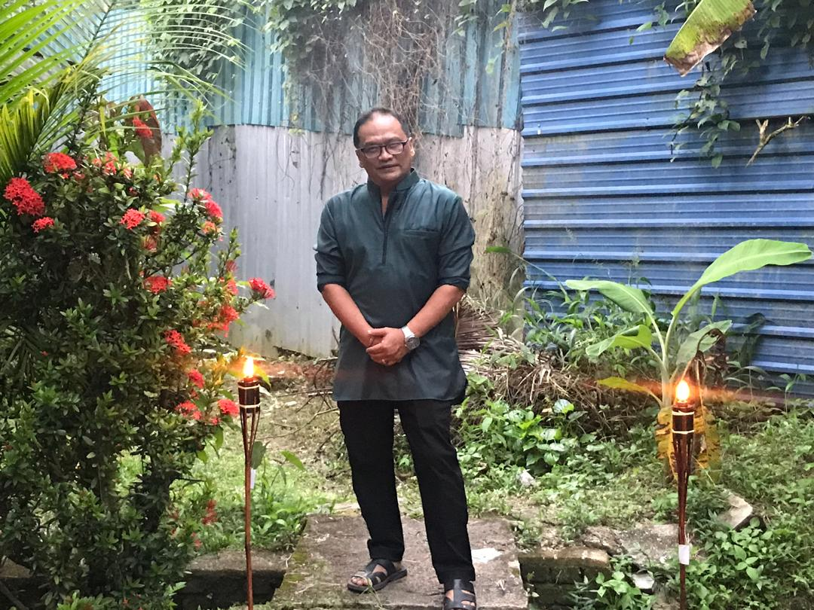
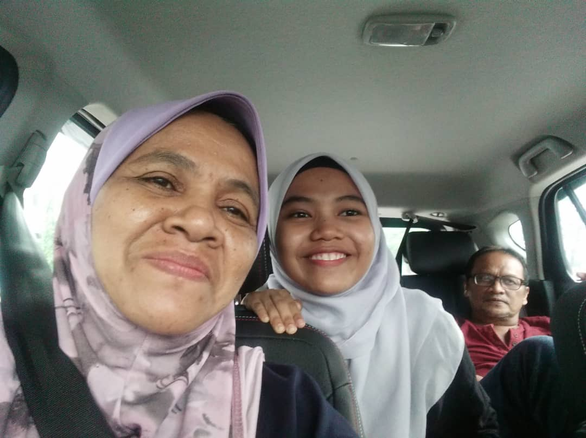
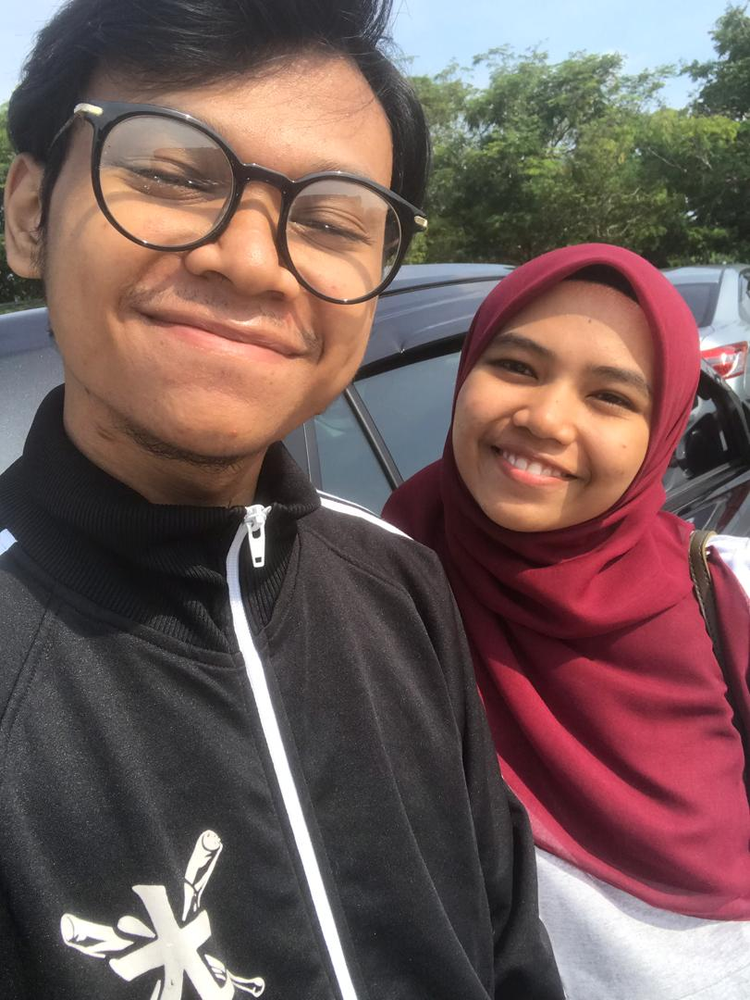

| Facts about my family member 💗 |
| FATHER |
This is my father and i call him 'Abah', he is my superhero and my first love.
- Name: Annuar Bin Md Hassan
- Birth date: 2 January 1964
- Origin: Pulau Pinang
- Personality:A father must have a firm and fierce nature. But he has a good heart and he love his children. His personality is a bit quiet but he likes to laugh when he feels fun. He is also a generous person and does not stingy on his children.He will always try to get anything we want as long as he can afford, as well as is a hard working guys.
|
This is my belevod mother and i call her 'Mak',she is beautiful and powerfull mother for me.
- Name: Mazlifah Binti Omar
- Birth date: 11 Febuary 1966
- Origin: Kedah
- Personality: She is someone who has a high and good motherly nature. She loves to help others, loving person, and is liked by other people. She is also a friendly person when approached, although she looks firm from the ripples on his face but if known, she can easily adapt to new environments.
|
MOTHER |
| BROTHER |
This is my brother and i call him 'Abang'.He is my protector, friends and sometime we fighthing.
- Name: Ahmad Aidil Bin Annuar
- Birth date: 29 May 1997
- Origin: Kedah
- Personality: He is a simple and relatively quiet person if he does not know someone. But if known more deeply he is a joker. As a sibling, fighting is normal, but he is a brother who likes to support me when I need him. He was also a hard worker and confident in whatever he did.
|